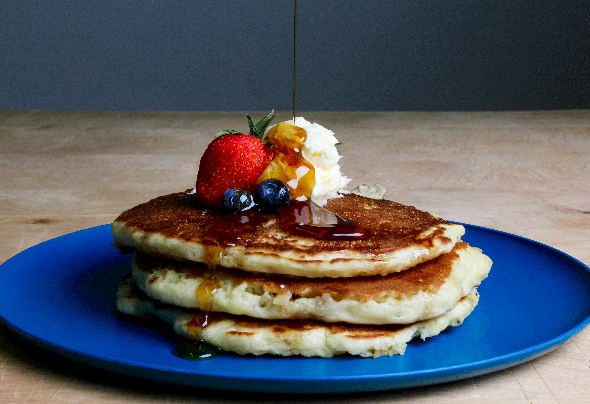

Classic Pancakes
Fluffy, golden pancakes made with simple ingredients, perfect for a lazy weekend breakfast.
Ingredients
- 1 1/2 cups all-purpose flour
- 3 1/2 teaspoons baking powder
- 1 teaspoon salt
- 1 tablespoon white sugar
- 1 1/4 cups milk
- 1 egg
- 3 tablespoons butter, melted
- 1 teaspoon vanilla extract
- Cooking spray or additional butter for the pan
For Serving (Optional)
- Maple syrup
- Fresh berries
- Sliced bananas
- Whipped cream
- Additional butter
Instructions
- In a large bowl, sift together the flour, baking powder, salt, and sugar.
- Make a well in the center and pour in the milk, egg, melted butter, and vanilla extract. Mix until smooth.
- Heat a lightly oiled griddle or frying pan over medium-high heat. Test the heat by flicking a few drops of water onto the surface—they should sizzle and bounce.
- Pour 1/4 cup of batter onto the griddle for each pancake.
- Cook until bubbles form on the surface and the edges look dry, about 2-3 minutes. Flip and cook for another 1-2 minutes.
- Keep pancakes warm in a preheated 200°F (95°C) oven while cooking the rest.
- Serve hot with maple syrup, fresh fruit, or whipped cream.
Tips for Perfect Pancakes
- Don't overmix the batter: A few lumps are okay. Overmixing makes pancakes tough.
- Let the batter rest: Resting for 5-10 minutes ensures fluffier pancakes.
- Flip only once: Flip when bubbles form on the surface.
- Keep warm: Place cooked pancakes in a 200°F oven while finishing the batch.
- Customize: Add blueberries, chocolate chips, or bananas for variety.
Nutrition Information
Per serving (2 pancakes):
| Nutrient | Amount |
|---|---|
| Calories | 320 |
| Total Fat | 11g |
| Saturated Fat | 6g |
| Cholesterol | 70mg |
| Sodium | 940mg |
| Total Carbohydrates | 47g |
| Dietary Fiber | 1g |
| Sugars | 7g |
| Protein | 8g |